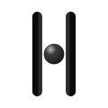
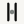

Geometry search is stopped. Occupancy is frozen in plan: parallel stadiums, centred orb, pillar 11 / gap 26.2 / r 11.4 / height 94. Objecthood is material/value — structure versus bead — not more silhouette. Flat matte. No chrome tubes, no glow, no teal. Type is not frozen; Fraunces is the current inscriptional lockup candidate.
 Waking Matter
Waking Matter
SVG lockup files still carry Newsreader outlines as a stand-in. The comparison lockup above is Fraunces (opsz 144, SOFT 0).


A hole in the aperture is preferred in principle. Source occupancy leaves ~1.7 units of air each side of the orb, so a boolean counter would vanish. Ring is the honest 1-bit bead. At 16px the ring fills the slit and reads as a bar — that is why small sizes use two-value, not 1-bit.

24Not thickened. Not a 32-grid recut. If 16px is delicate, that is occupancy, not a license to redraw the parent.


Production candidate. Geometry frozen in plan. Finish not frozen.
Ask only whether structure/bead separation recovers Direction 04 objecthood without chrome, glow, or teal. Do not reopen pillar/gap/orb search. Do not resume Phase B. Live main is untouched.